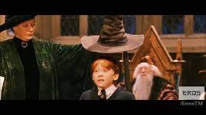

GRYFINDOOOOOOR!!!!
Ron Weasley:
- Leal hacia sus amigos y su familia.
- Humorístico, aporta un toque de humor a la serie.
- Inseguro en ocasiones, especialmente en comparación con sus hermanos mayores.
- Apasionado por el Quidditch y su familia.
Continuar